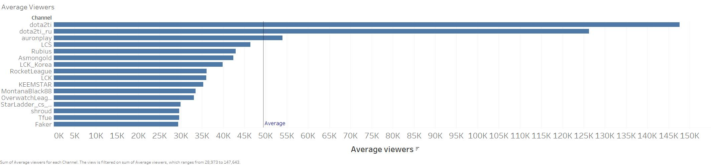
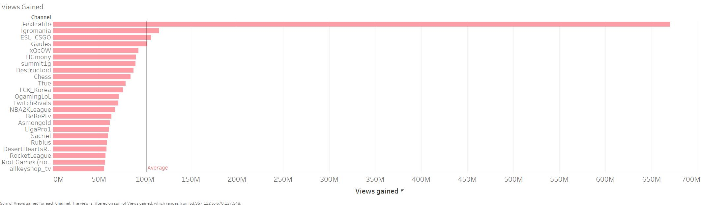
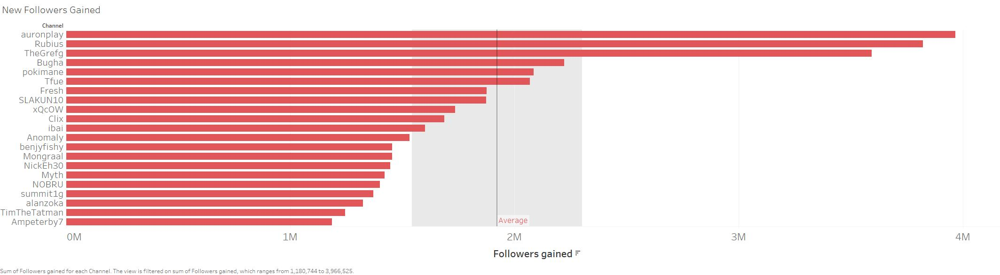
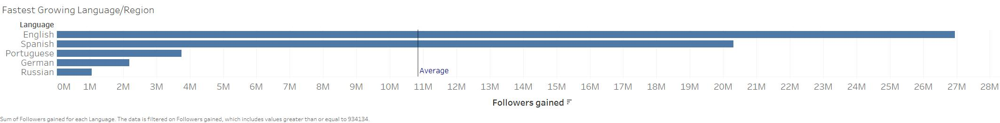
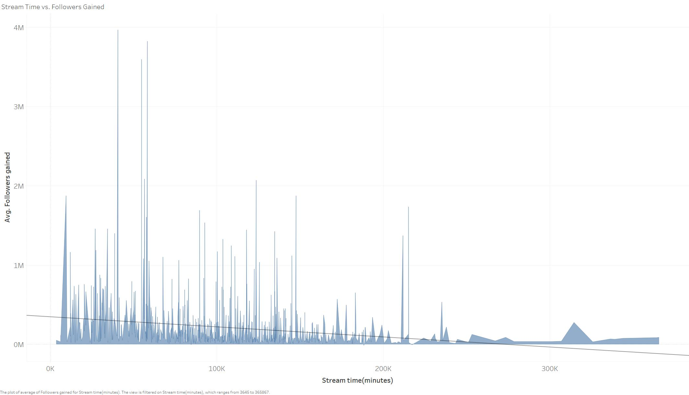
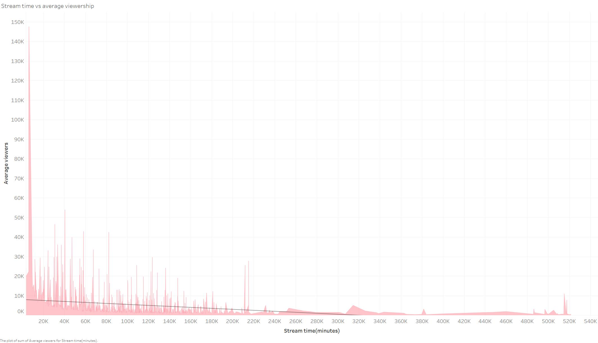
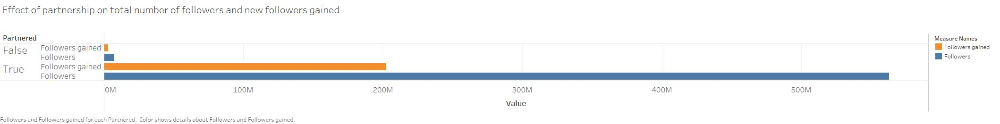
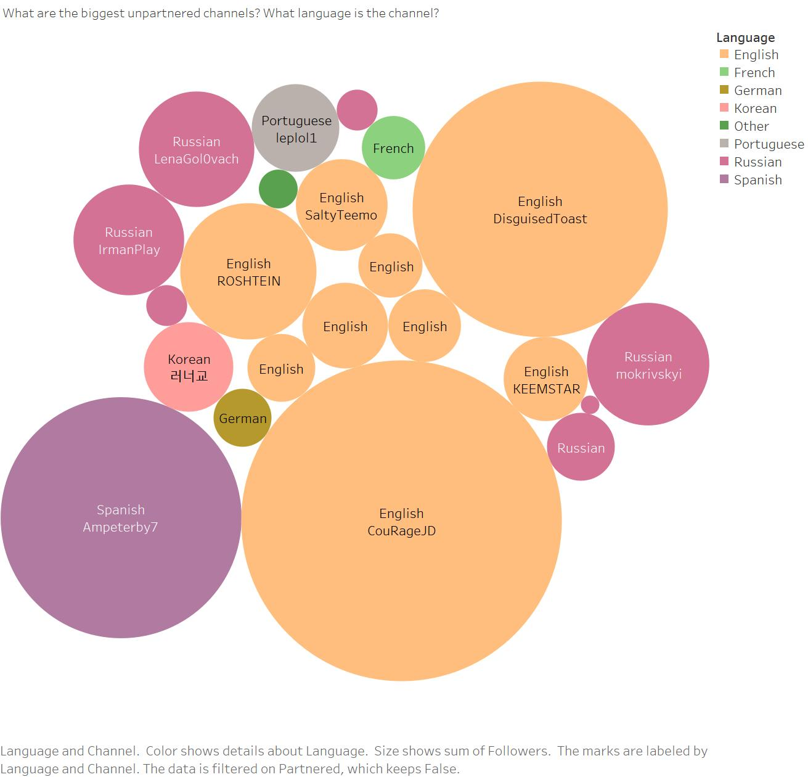
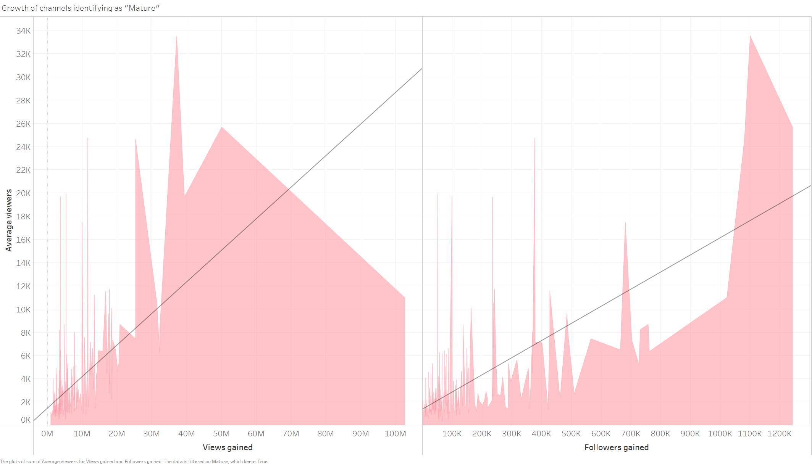
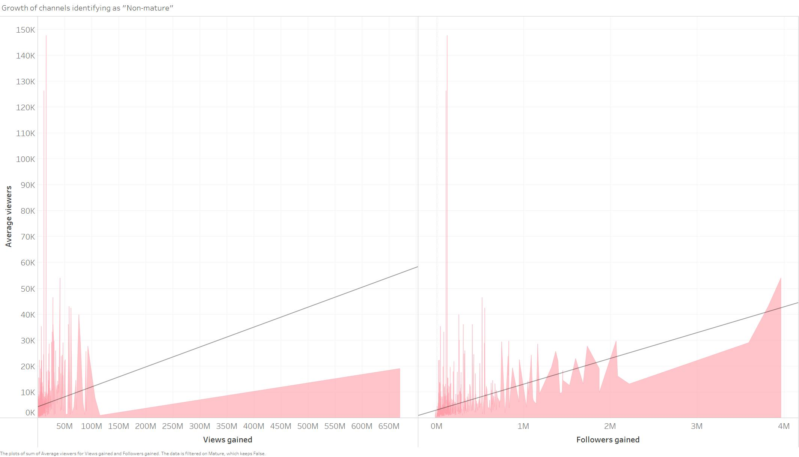

1) Average Viewership Across Top Channels
Assignment 2: Exploratory Data Analysis
Sai Suresh
Dataset
Twitch Streamer Data: 2020
Dataset of top Twitch channels; includes follower count, average viewer count, etc.
The data is available online at: Kaggle
Initial Analysis Questions
- Which Channels Have the Most Average Viewers?
- Which Streamers Have the Most Overall Views?
- Which Streamers Gained the Most Followers? (i.e. most growth))
Discoveries & Insights
2) Views Gained Across Top Channels
3) Which Streamers Gained the Most Followers? (i.e. grew the most)

4) Which Language/Region Grew the Most in 2020?
Western regions overall grew the most in 2020; makes intuitive sense since Twitch in itself is an American company.
5) Stream time vs Followers Gained; is there a Correlation?
Yes, a clear trend is present; as stream time increases, the number of new followers gained decreases. This tells us that the growth of a channel (new followers of the channel) is heavily skewed to the earlier portions of a live-stream.
6) Stream time vs average viewership? Is there a correlation?
Like 5, a clear trend is present; average viewership tends to decline the longer a stream continues. This tells us that a majority of viewers join the earlier portions of a stream, and not many remain until the end.
7) Does being offically partnered with Twitch have an impact on channel growth?
8) What are the biggest unpartnered channels? What language is the channel?
9) How quickly did mature channels grow?
Line represents the trend of new followers gained; the trend is rather positive, which in part can be explained due to the lockdowns from the pandemic (more in summary).
10) How quickly did non-mature channels grow?
Line represents the trend of new followers gained; rate of growth was markedly slower than mature channels.
Summary
Initial questions:
Based off the three initial questions, we can easily see which Twitch channels have the most average viewers in a live stream, most overall views, and the greatest amount of new followers. This makes a lot of sense, as channels that have the most viewer interaction will have the most followers. Furthermore, a majority spoke English, or were from Western regions.
Deeper Dive
After the initial three questions, I started interacting with the data available, and found some interesting results. The most interesting result I found was that the rate of growth (signified by followers gained) was much faster for channels identifying as mature as opposed to those that did not identify as mature. In the context of COVID-19 and mandatory lockdowns, this makes sense, since an influx of mature viewers likely joined twitch and found mature streamers they enjoyed to watch. I was also surprised to see how big some unpartnered channels were; some have over one million followers, but I am not sure why these channels remain unpartnered.
Another correlation that makes intuitive sense is average viewership vs. time spent streaming. As time spent streaming increases, the trend of average viewership tends to decrease. Considering how long some streamers live-stream, it makes sense as to how average viewship declines in relation to time; not viewers stay to watch an entire stream.
One result that surprised me was the disparity between unpartnered and partnered channels, both in terms of growth (new followers) as well as total number of followers. I expected there to be a difference between the two, but did not expect even close to that level of a difference.